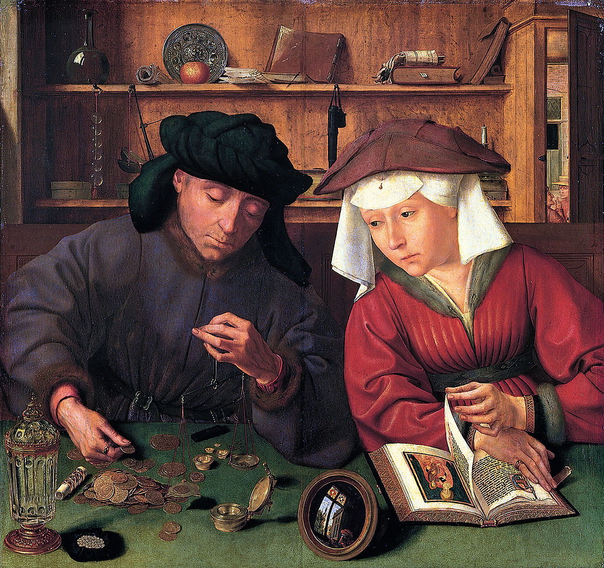

<head>
<meta charset="UTF-8" />
<meta name="keywords" content="drawing, painting" />
<meta name="description" content="drawings by Sunjy" />
<title>Sunjy</title>
<link rel="shortcut icon" type="image/x-icon" href="../../mImages/mCommon/favicon.ico" media="screen" />
<link rel="stylesheet" type="text/css" href="../../mCsses/mCommon/mCssA.css" />
<link rel="stylesheet" type="text/css" href="../../mCsses/mCommon/mCssB.css" />
<link rel="stylesheet" type="text/css" href="../../mCsses/mCommon/mCssC.css" />
<link rel="stylesheet" type="text/css" href="../../mCsses/mCommon/mCssD.css" />
<link rel="stylesheet" type="text/css" href="../../mCsses/mContent/mCssA.css" />
<link rel="stylesheet" type="text/css" href="../../mCsses/mContent/mCssB.css" />
<link rel="stylesheet" type="text/css" href="../../mCsses/mContent/mCssC.css" />
<link rel="stylesheet" type="text/css" href="../../mCsses/mContent/mCssD.css" />
</head>
<script type="text/javascript" src="../../mScripts/mContent/mContentAA.js" /></script>
<script type="text/javascript" src="../../mScripts/mContent/mContentAB.js" /></script>
<script type="text/javascript" src="../../mScripts/mContent/mContentAC.js" /></script>
<script type="text/javascript" src="../../mScripts/mContent/mContentAD.js" /></script>
<script type="text/javascript"></script> 
<script type="text/javascript">
document.write('<div class="mImgAbsolute"></div>');
/*
document.write('<p class="mFontSizeBColor" />From a white paper...</p>');
document.write('<table class="center"><tr><td>');
document.write('');
document.write('</td></tr></table>');
*/
</script>


<script type="text/javascript">
document.write('<p class="mFontSizeBColor" />The Money Changer and His Wife</p>');
document.write('<p class="mFontSizeSColor" />By Quentin Matsys, 1514. “The Money Changer and His Wife” depicts a man who is weighing the jewels and pieces of gold at a table. His wife sits next to him, distract from her book. <br><br>The couple is not dressed as members of the nobility, but rather as well-to-do citizens of Antwerp, where the painting was made.<br><br>At the time, Antwerp had grown in population with the influx of many southern immigrants fleeing the Spanish Inquisition.<br><br>Among this international community, there was a demand for money-changers and moneylenders, as international commerce was increasing in the port city.<br><br>The wife is turning a page in the religious devotion book showing an illustration of the Virgin and Child.<br><br>Quentin Matsys has incorporated many details in the background reflecting the life of a prosperous burgher of Antwerp.<br><br>The shelf includes a fruit, books and manuscripts, a decorated puter plate and tools of the trade. At the top right through the open door, we can see two neighbors gossiping. In the foreground are the standard weights and their specially made container.<br><br>On the bottom left is a decorated glass carafe with lid and metal trimmings. In the center is a mirror reflecting the window.<br><br>The screen outside is shown in fascinating detail, and there is also a reflection of the artist. By painting his image reflected in the mirror, Massys echos the use of this device by Jan van Eyck in The Arnolfini Marriage of 1434.<br><br>Matsys displays his considerable skill as a portrait painter in this 1514 oil on panel painting. He has skillfully exhibited his ability to capture the highly personal and individual characteristics that reflect his realism technique. <br><br>While this painting can be enjoyed as a masterpiece of art, depicting an emerging respectable occupation, most art historians see moral and satirical meanings.<br><br> If this painting is a moral work, it is condemning avarice and exalting honesty. This meaning is symbolized by the Christian symbols of the book with Virgin and Child and the scales representative of the Last Judgment. <br><br>The snuffed-out candle and the fruit on the shelf, are an allusion to original sin and symbols of death. The carafe of water and the rosary hanging from the shelf symbolize faith and purity. <br><br>The shiny gold, pearls are a symbol of lust, and the jewelry has distracted the wife from her spiritual reading. Have the objects in the background been carefully chosen to strengthen the work’s moral message?</p>');
document.write('<table class="center" /><tr><td>');
document.write('<br>The couple is not dressed as members of the nobility, but rather as well-to-do citizens of Antwerp, where the painting was made.<br><br>At the time, Antwerp had grown in population with the influx of many southern immigrants fleeing the Spanish Inquisition.<br><br>Among this international community, there was a demand for money-changers and moneylenders, as international commerce was increasing in the port city.<br><br>The wife is turning a page in the religious devotion book showing an illustration of the Virgin and Child.<br><br>Quentin Matsys has incorporated many details in the background reflecting the life of a prosperous burgher of Antwerp.<br><br>The shelf includes a fruit, books and manuscripts, a decorated puter plate and tools of the trade. At the top right through the open door, we can see two neighbors gossiping. In the foreground are the standard weights and their specially made container.<br><br>On the bottom left is a decorated glass carafe with lid and metal trimmings. In the center is a mirror reflecting the window.<br><br>The screen outside is shown in fascinating detail, and there is also a reflection of the artist. By painting his image reflected in the mirror, Massys echos the use of this device by Jan van Eyck in The Arnolfini Marriage of 1434.<br><br>Matsys displays his considerable skill as a portrait painter in this 1514 oil on panel painting. He has skillfully exhibited his ability to capture the highly personal and individual characteristics that reflect his realism technique. <br><br>While this painting can be enjoyed as a masterpiece of art, depicting an emerging respectable occupation, most art historians see moral and satirical meanings.<br><br> If this painting is a moral work, it is condemning avarice and exalting honesty. This meaning is symbolized by the Christian symbols of the book with Virgin and Child and the scales representative of the Last Judgment. <br><br>The snuffed-out candle and the fruit on the shelf, are an allusion to original sin and symbols of death. The carafe of water and the rosary hanging from the shelf symbolize faith and purity. <br><br>The shiny gold, pearls are a symbol of lust, and the jewelry has distracted the wife from her spiritual reading. Have the objects in the background been carefully chosen to strengthen the work’s moral message?" />');
document.write('</td></tr></table>');
</script>


